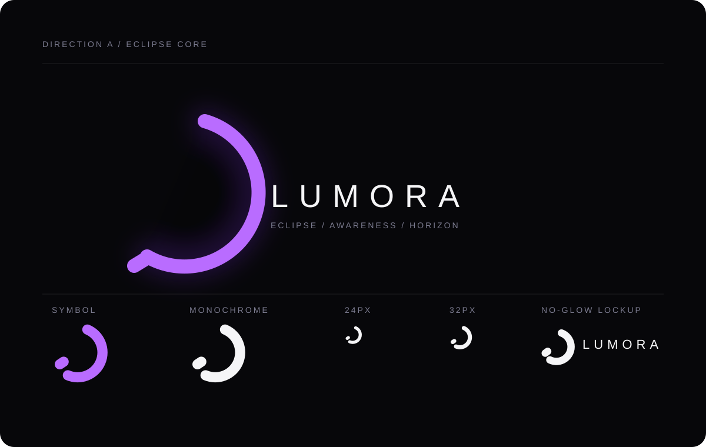
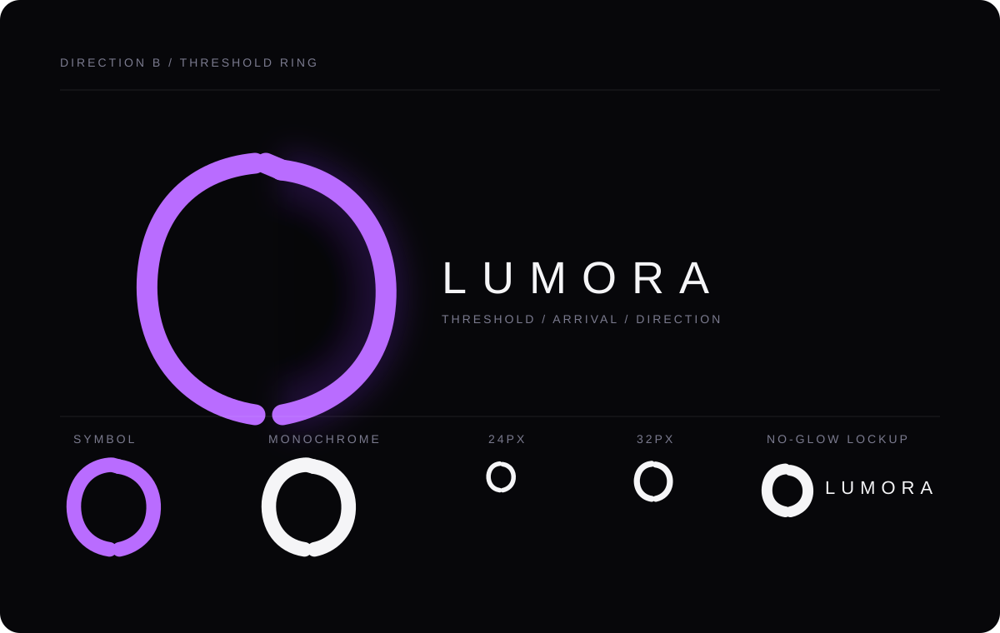
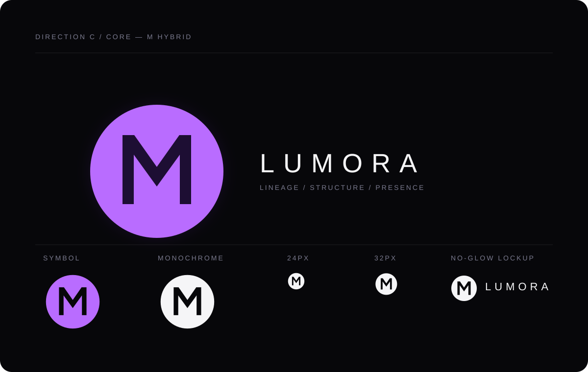

A — Eclipse Core
Interrupted orbit; a quiet seam keeps the void from becoming a generic donut.
All three studies remain original, still, and experimental. Violet is presentation atmosphere only; the small and monochrome rows deliberately remove glow as a crutch.
Frozen Candidate Alpha / M Core, rendered from its current production paths for comparison only.
Interrupted orbit; a quiet seam keeps the void from becoming a generic donut.
Tapered aperture with a more directional, stronger silhouette.
Circle with a structural negative-space lineage cue, not an M pasted into a ring.


